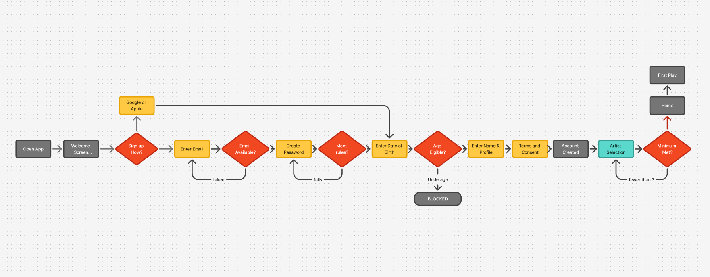
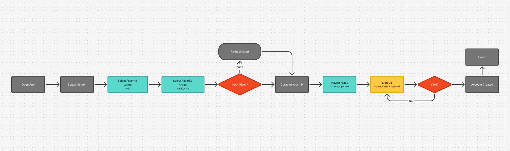
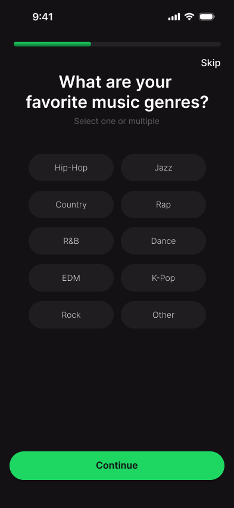
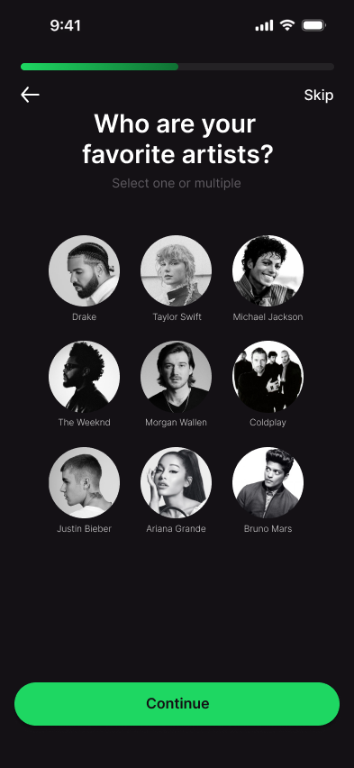
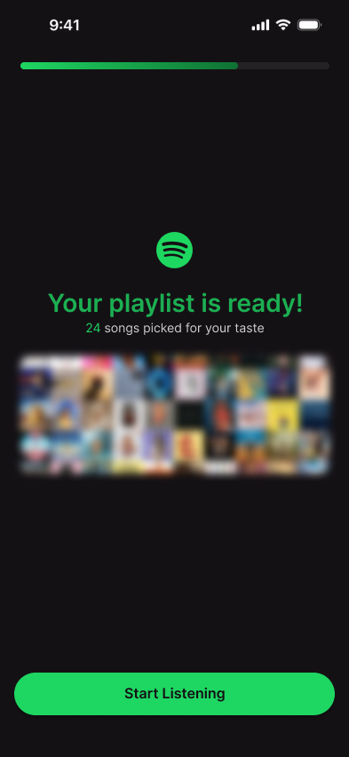
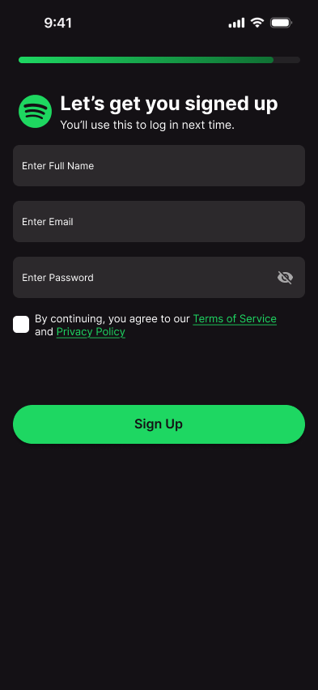

Reducing Signup Drop‑Off
Spotify asks for six things before it plays a single song. I moved the payoff in front of the ask — a playlist built from your taste first, the account second.
Constraints
Competitors
Persona
Principles
Userflow
Screens
Gaps and fixes
Research
Drop-off isn’t caused by length. It’s caused by uncompensated length — steps that take without giving anything back.



Date of birth is legally required, so it stays. Separating constraints from choices was the most useful hour of the project.
Spotify has the hardest version of this problem
No major music app shows the payoff before the ask. Apple Music has the best picker — three levels per gesture, artists derived from genres — but it’s one-time, with no undo. The closest pattern is Duolingo: a lesson before the account.
Synthesis
I separated abandonment into the mechanisms behind it. This is the spine of the redesign — every later decision is tagged with the driver it answers.
User persona
- Master’s student
- Android — switched from iPhone three weeks ago
- Five to six hours a day on headphones
William works with headphones on most of the day — coursework, the lab, his commute. He spent four years quietly training Apple Music into a taste profile he trusted. Now on Android, he’s trying Spotify and starting from zero. He knows what a good recommendation feels like, so a weak first impression lands harder.
I gave it three artists and it played me the same stuff it plays everyone.
Needs
To hear something that sounds like him on the first play — not what everyone gets.
To know why he’s being asked for something before he gives it.
To rebuild the taste profile he left behind without it feeling like a form.
Pain Points
Date of birth arrives before any music, and feels unrelated to it.
A password error four fields in, having received nothing yet.
A generic first play, which tells him the setup was decorative.
Emotional State with Spotify
He wants this to work. The gap between engagement and satisfaction is the opportunity.
Ideation
Hypothesis
a new user gets a personalized playlist before being asked to register,
more users who open the app will reach first play,
the account reads as saving something they own, not a gate on something unproven.
playlist-reveal → account conversion is no better than Spotify’s welcome → account.
“You added three screens before signup.”
Those screens give back — two take a preference, one hands over a result. So the primary metric is end-to-end completion, not form completion, which would flatter the redesign.
Three principles
Earn commitment before requesting it
Registration moves to the end. By then, leaving means discarding their own work.
Reduce the cost of each decision
Ten chips, multi-select, faces not names. No minimum anywhere.
Show the payoff before the ask
A segmented bar says it’s short. The reveal lands right before the only screen that asks for anything.

Final Designs
Accent discipline
Green only means selected, enabled or done — so Sign Up reads as continuation.
Pinned primary action
Same position on every screen, so the thumb learns it once.
Fill, not border
Selection changes the fill, so the grid never shifts as you tap.

Genre selection
Scannable in one pass. Users assume single choice unless told otherwise.
A minimum turns a preference into a requirement — and creates an error loop.
A hidden exit turns a soft skip into hard abandonment.

Artist selection
Recognition is faster than recall; names catch artists known only by name.
First point a user might spot an upstream mistake. Without it, the only fix is leaving.
Curating your mix
An instant result reads as pre-baked. This screen is the receipt for the effort just spent.

Playlist ready
A number reads as computed; a generic confirmation reads as a template.
Peak-end rule — the ask lands at the flow’s high point, not its low.

Sign up
Reframes signup as saving what they just built.
A mistake costs a correction, not a round trip.
Deliberate rather than dark-patterned.
Reflection
End-to-end, not form completion — measuring the form alone would exclude everyone who left before reaching it.
If completion rises but day-7 retention falls, it optimized the wrong thing and shouldn’t ship.
Known gaps, and the fix for each
What I’d do differently — write one true, specific sentence here.